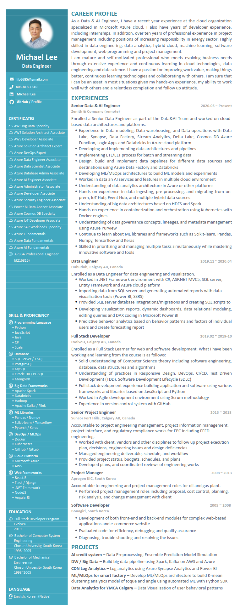

{% include quote.html quote=page.quote author=page.author %}

<div class="row resume-wrapper" style="border: 2pt; background-color: rgba(241, 241, 129, 0.959); border-radius: 50px; padding: 15pt;">
  <a href="./assets/Resume_Jinbong Lee.pdf" title="click to open in pdf viewer" target="_blank">
    
    <button class="fill col s8 offset-s2 m4 offset-m4">open as pdf</button>
  </a>
</div>
